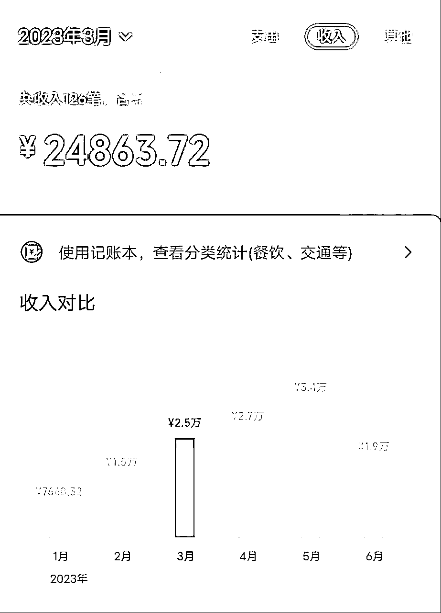
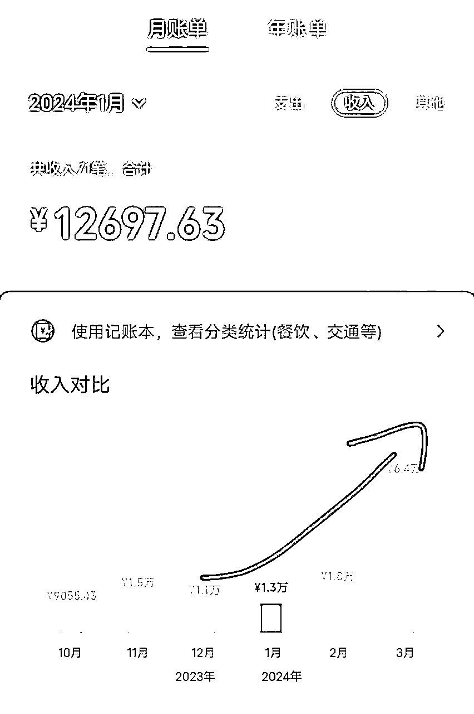
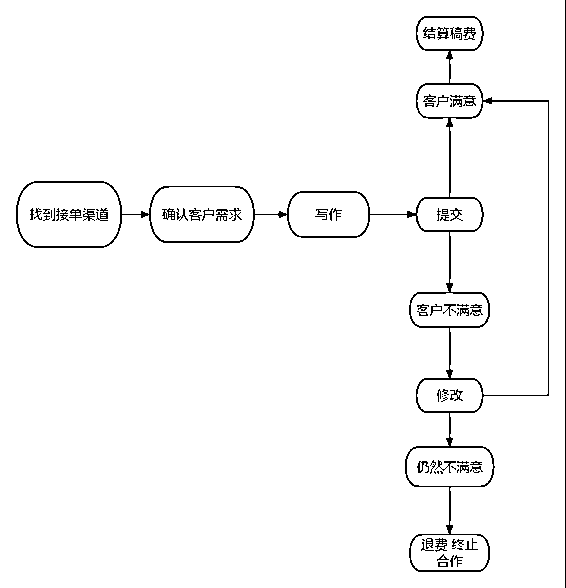
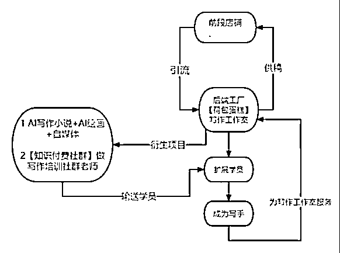
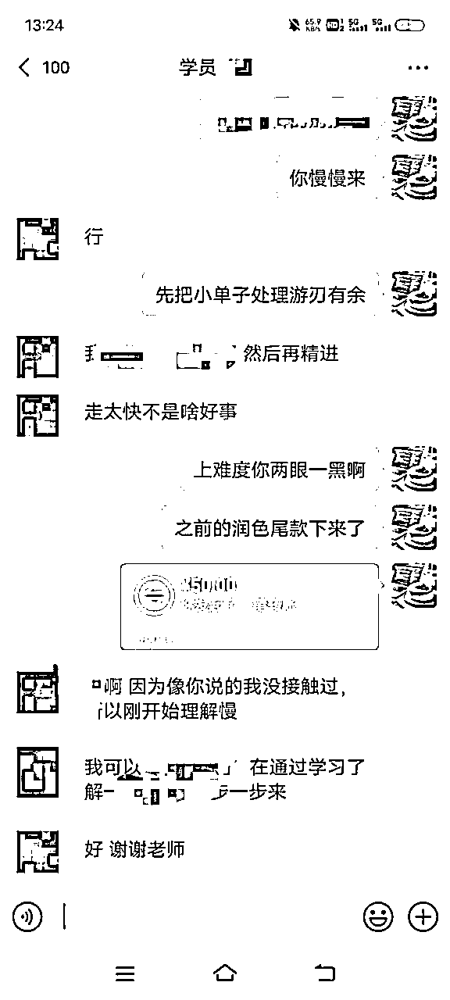
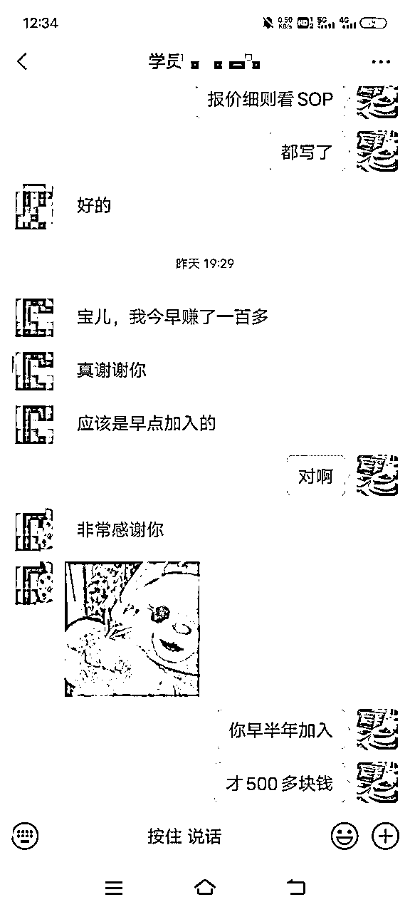
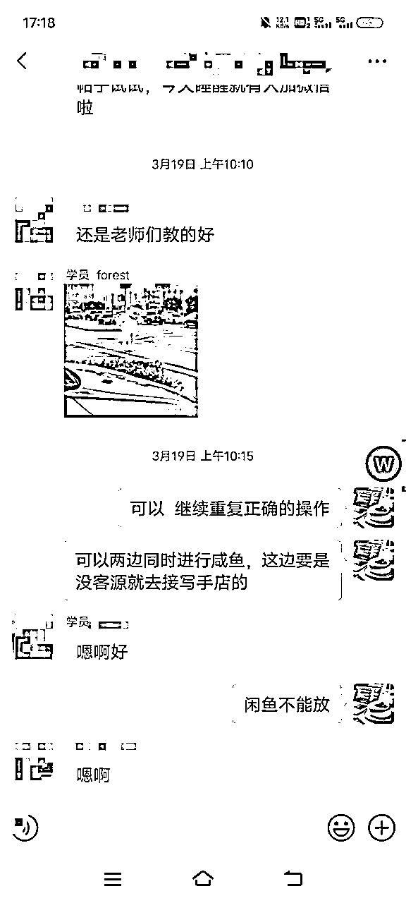
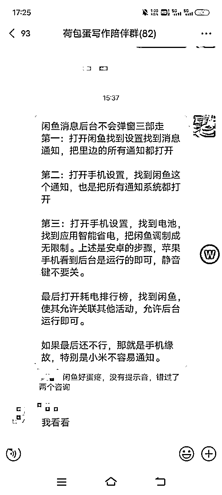
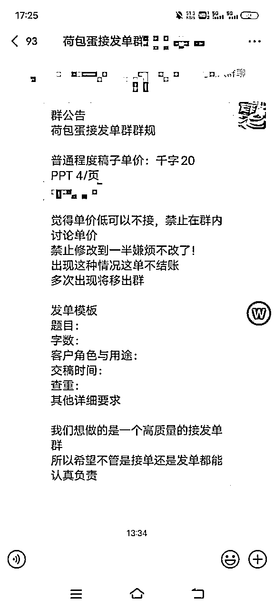

00后女生AI写作之旅2.0：一年努力，月入破六万大关
来源：https://lv9qj6hfr4z.feishu.cn/docx/NNHVdQ9bzohoxsxgEQKcGCu4nme
在这个ChatGPT风靡全球的时代，AI生成内容（AIGC）行业发展速度惊人。2023年，没啥比AIGC更吸引眼球了。我们都在想怎么把AI更好地融入生活，尤其是写作相关。
1自我介绍
- 嘿，大家好！我是荷包蛋糕哦哦，一个24岁的天津姑娘。在过去的一年里，我一直在搞AI写作这档子事，经过一年的磨练，我的月收入从三万多涨到了六万多，团队的总收入也突破了十万大关！成功带领100加学员一起闯入ai写作变现这个领域，如果你对ChatGPT啊 ，kimi啊，写作挣钱啊，或者怎么把写作水平提上去啊，这些事儿有啥不懂的，我绝对能帮到你，不管你是写作界的小白还是想通过写作多挣点儿钱的老手，我都乐意跟你分享我知道的那一东西。


2去年一年我都做了什么？
- 提升了写作变现的收入：从写作变现的项目中赚取了显著的收入，月入稳定在3万以上，全年累计收入超过20万，这是一个非常了不起的成绩。
- 成功运用AI技术：在接触到ChatGPT之后，迅速掌握并运用这项技术，提升了写作的效率和质量，同时也帮助你扩大了客户基础和服务范围。
- 合作与扩展：与其他对AI写作或者AI技术感兴趣的小伙伴社建立了合作关系，增加了更多元化的收入来源，也提高了在写作领域的知名度和影响力。
- 教育与培训：你成为了一个AI写作赋能变现训练营的导师，时薪达到四位数。成功带领100+学员从0到1，掌握了AI写作变现的技能。
3 我的项目概述与获客渠道是什么？
我的项目其实挺直接的，核心就是利用AI和人工相结合的方式来提供写作服务，然后通过各种渠道来吸引客户，打造一个属于自己的私域流量池，最终将定制化的稿件交付给客户。
渠道主要包括：
- 淘宝写手店面试接单 好处渠道稳 坏处 价格低 结算慢
- 闲鱼私域引流 价格一般 🉑培养私域 前期需要养号 运营
- 微信QQ各种接单群 单子多 但是有骗子 需注意
- 小红书和boos渠道 目前测试中下周发教程，
- 荷包蛋接发单群 不定期发单
简而言之我们的操作整体思路其实很简单：找到接单渠道——确认客户需求——写作——变现

4我的经验与模式打造分享
先看个图 ，这个是我去年的计划 如今已经一一实现了。

1 前端店铺：目前我与合伙人运营了12家咸鱼店铺，日流水破四位数。
2后端工厂：荷包蛋写作陪伴群 帮助更多学员接触了解ai写作这个项目，并且帮助他们学会咸鱼店铺的运营与y'n'liu完成从0到1 。



5 这种模式的优势
- 各司其职：喜欢写作的专注于产品端 专注写作 不会写作的可以安心做渠道 给会写做的发单 大家一起赚钱
- 抱团取暖：我们一起在群内交流讨论 不会的问题随时一起解决，减少了很多不必要的信息误差和知识壁垒
实现了 这一行业知识的整合 和 资源的整合。


6我是怎么协同写作工作室高质量交付的？
- 了解客户需求并且针对客户设置私人定制的服务，从选题到截稿全程陪伴 ，一对一指导，遇到难题客户产生焦虑情绪时也会加以安抚，这个工作不仅仅是提供我们的产品（稿件）更多的是提供我们更加细心优化的服务与陪伴。
- 团队分工。建立清晰的团队分工，根据团队成员的专长和能力分配任务，确保每个人都在自己擅长的领域发挥最大价值，例如擅长改格式的专门负责文章格式修改，擅长做ppt的可以优先把ppt的单子给他。
- .质量控制。设立质量控制机制，通过我和老写手的的审核提交客户，再由客户反馈进行修改，网上质量的同时不断提升写作水平。
7正常工作日的一天，我的时间管理是怎样的？
目前没有全职的工作，这个写作的副业也十分的自由，旺季2-6月会稍微忙一点，每天工作4-5小时左右，工作具体时间自行安排，偶尔加班，其他非旺季的时候差不多每天工作2-3小时，同样自己在截稿日期前保证交稿即可，工作时间自行安排，很少加班，可以说是实现了吃喝玩乐与搞钱互不耽误的躺平式快乐搞钱模式。
当然 你想赚的更多 就要付出更多的时间，最近有点忙，基本上每天断断续续工作八小时左右，当然收入也破了6万啊，我觉得还是很值的的。
8做市场拓展的核心方法是什么？
服务营销为主，病毒式营销为辅助。
先让客户认可你的产品与服务，然后认可你这个人，老客户带新客户完成裂变。
同时合作一些靠谱的机构和中介确保基本的收入与合作
还有就是持续不断地打造【荷包蛋糕】这个IP，不断扩大自己的影响力，比如现在通过这个公众号平台，又会有很多人看到我了。
9一些感悟与心得
之前有一个朋友说的话特别好，他说，我们目前要培养的不是找工作的能力，而是赚钱的能力，所以这些年做副业的经过，对我来说十分的宝贵，十分的重要。人确实不太会写此类分享的帖子，我望大家不要介意，有任何不懂的问题可以随时跟我链接，真诚的陪伴，大家希望更多的人了解AI写作相关的知识。